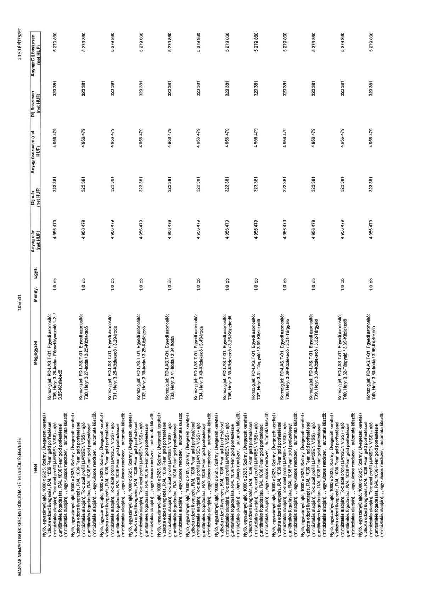

| Tétel | Megjegyzés | Menny. | Egys. | Anyag e.ár (net HUF) | Díj e.ár (net HUF) | Anyag összesen (net HUF) | Díj összesen (net HUF) | Anyag+Díj összesen (net HUF) |
|---|---|---|---|---|---|---|---|---|
| Nyíló, egyszárnyú ajtó, 1000 x 2625, Szárny: Üvegezett kerettel / víztiszta edzett üvegezés, RAL 1036 Pearl gold porfestéssel (mintáztatás alapján), Tok: acél profil (JANSEN VISS) - ajtó gumitömítés fogadására, RAL 1036 Pearl gold porfestéssel (mintáztatás alapján), , egykulcsos rendszer, , automata küszöb, | Konszig.jel: PD-I.AS.T-01, Egyedi azonosító: 705, Hely: 3.28-Iroda - Főosztályvezető 1-2. / 3.25-Közlekedő | 1,0 | db | 4 956 479 | 323 381 | 4 956 479 | 323 381 | 5 279 860 |
| Nyíló, egyszárnyú ajtó, 1000 x 2625, Szárny: Üvegezett kerettel / víztiszta edzett üvegezés, RAL 1036 Pearl gold porfestéssel (mintáztatás alapján), Tok: acél profil (JANSEN VISS) - ajtó gumitömítés fogadására, RAL 1036 Pearl gold porfestéssel (mintáztatás alapján), , egykulcsos rendszer, , automata küszöb, | Konszig.jel: PD-I.AS.T-01, Egyedi azonosító: 730, Hely: 3.27-Iroda / 3.25-Közlekedő | 1,0 | db | 4 956 479 | 323 381 | 4 956 479 | 323 381 | 5 279 860 |
| Nyíló, egyszárnyú ajtó, 1000 x 2625, Szárny: Üvegezett kerettel / víztiszta edzett üvegezés, RAL 1036 Pearl gold porfestéssel (mintáztatás alapján), Tok: acél profil (JANSEN VISS) - ajtó gumitömítés fogadására, RAL 1036 Pearl gold porfestéssel (mintáztatás alapján), , egykulcsos rendszer, , automata küszöb, | Konszig.jel: PD-I.AS.T-01, Egyedi azonosító: 731, Hely: 3.25-Közlekedő / 3.29-Iroda | 1,0 | db | 4 956 479 | 323 381 | 4 956 479 | 323 381 | 5 279 860 |
| Nyíló, egyszárnyú ajtó, 1000 x 2625, Szárny: Üvegezett kerettel / víztiszta edzett üvegezés, RAL 1036 Pearl gold porfestéssel (mintáztatás alapján), Tok: acél profil (JANSEN VISS) - ajtó gumitömítés fogadására, RAL 1036 Pearl gold porfestéssel (mintáztatás alapján), , egykulcsos rendszer, , automata küszöb, | Konszig.jel: PD-I.AS.T-01, Egyedi azonosító: 732, Hely: 3.30-Iroda / 3.25-Közlekedő | 1,0 | db | 4 956 479 | 323 381 | 4 956 479 | 323 381 | 5 279 860 |
| Nyíló, egyszárnyú ajtó, 1000 x 2625, Szárny: Üvegezett kerettel / víztiszta edzett üvegezés, RAL 1036 Pearl gold porfestéssel (mintáztatás alapján), Tok: acél profil (JANSEN VISS) - ajtó gumitömítés fogadására, RAL 1036 Pearl gold porfestéssel (mintáztatás alapján), , egykulcsos rendszer, , automata küszöb, | Konszig.jel: PD-I.AS.T-01, Egyedi azonosító: 733, Hely: 3.41-Iroda / 2.34-Iroda | 1,0 | db | 4 956 479 | 323 381 | 4 956 479 | 323 381 | 5 279 860 |
| Nyíló, egyszárnyú ajtó, 1000 x 2625, Szárny: Üvegezett kerettel / víztiszta edzett üvegezés, RAL 1036 Pearl gold porfestéssel (mintáztatás alapján), Tok: acél profil (JANSEN VISS) - ajtó gumitömítés fogadására, RAL 1036 Pearl gold porfestéssel (mintáztatás alapján), , egykulcsos rendszer, , automata küszöb, | Konszig.jel: PD-I.AS.T-01, Egyedi azonosító: 734, Hely: 3.40-Közlekedő / 3.43-Iroda | 1,0 | db | 4 956 479 | 323 381 | 4 956 479 | 323 381 | 5 279 860 |
| Nyíló, egyszárnyú ajtó, 1000 x 2625, Szárny: Üvegezett kerettel / víztiszta edzett üvegezés, RAL 1036 Pearl gold porfestéssel (mintáztatás alapján), Tok: acél profil (JANSEN VISS) - ajtó gumitömítés fogadására, RAL 1036 Pearl gold porfestéssel (mintáztatás alapján), , egykulcsos rendszer, , automata küszöb, | Konszig.jel: PD-I.AS.T-01, Egyedi azonosító: 735, Hely: 3.39-Közlekedő / 3.25-Közlekedő | 1,0 | db | 4 956 479 | 323 381 | 4 956 479 | 323 381 | 5 279 860 |
| Nyíló, egyszárnyú ajtó, 1000 x 2625, Szárny: Üvegezett kerettel / víztiszta edzett üvegezés, RAL 1036 Pearl gold porfestéssel (mintáztatás alapján), Tok: acél profil (JANSEN VISS) - ajtó gumitömítés fogadására, RAL 1036 Pearl gold porfestéssel (mintáztatás alapján), , egykulcsos rendszer, , automata küszöb, | Konszig.jel: PD-I.AS.T-01, Egyedi azonosító: 737, Hely: 3.31-Tárgyaló / 3.39-Közlekedő | 1,0 | db | 4 956 479 | 323 381 | 4 956 479 | 323 381 | 5 279 860 |
| Nyíló, egyszárnyú ajtó, 1000 x 2625, Szárny: Üvegezett kerettel / víztiszta edzett üvegezés, RAL 1036 Pearl gold porfestéssel (mintáztatás alapján), Tok: acél profil (JANSEN VISS) - ajtó gumitömítés fogadására, RAL 1036 Pearl gold porfestéssel (mintáztatás alapján), , egykulcsos rendszer, , automata küszöb, | Konszig.jel: PD-I.AS.T-01, Egyedi azonosító: 738, Hely: 3.39-Közlekedő / 3.31-Tárgyaló | 1,0 | db | 4 956 479 | 323 381 | 4 956 479 | 323 381 | 5 279 860 |
| Nyíló, egyszárnyú ajtó, 1000 x 2625, Szárny: Üvegezett kerettel / víztiszta edzett üvegezés, RAL 1036 Pearl gold porfestéssel (mintáztatás alapján), Tok: acél profil (JANSEN VISS) - ajtó gumitömítés fogadására, RAL 1036 Pearl gold porfestéssel (mintáztatás alapján), , egykulcsos rendszer, , automata küszöb, | Konszig.jel: PD-I.AS.T-01, Egyedi azonosító: 739, Hely: 3.39-Közlekedő / 3.32-Tárgyaló | 1,0 | db | 4 956 479 | 323 381 | 4 956 479 | 323 381 | 5 279 860 |
| Nyíló, egyszárnyú ajtó, 1000 x 2625, Szárny: Üvegezett kerettel / víztiszta edzett üvegezés, RAL 1036 Pearl gold porfestéssel (mintáztatás alapján), Tok: acél profil (JANSEN VISS) - ajtó gumitömítés fogadására, RAL 1036 Pearl gold porfestéssel (mintáztatás alapján), , egykulcsos rendszer, , automata küszöb, | Konszig.jel: PD-I.AS.T-01, Egyedi azonosító: 740, Hely: 3.32-Tárgyaló / 3.39-Közlekedő | 1,0 | db | 4 956 479 | 323 381 | 4 956 479 | 323 381 | 5 279 860 |
| Nyíló, egyszárnyú ajtó, 1000 x 2625, Szárny: Üvegezett kerettel / víztiszta edzett üvegezés, RAL 1036 Pearl gold porfestéssel (mintáztatás alapján), Tok: acél profil (JANSEN VISS) - ajtó gumitömítés fogadására, RAL 1036 Pearl gold porfestéssel (mintáztatás alapján), , egykulcsos rendszer, , automata küszöb, | Konszig.jel: PD-I.AS.T-01, Egyedi azonosító: 745, Hely: 3.80-Iroda / 3.98-Közlekedő | 1,0 | db | 4 956 479 | 323 381 | 4 956 479 | 323 381 | 5 279 860 |
